Contents of page/chapter:
+Default Plot
+Plot Format: A First Look
+Plot Navigation
+Plot Linking
+Changing What is Plotted
+Plotting Manipulated Columns
+Restricting What is Plotted
+Overplotting
+Adding Plots
+Pinning Plots
+Combining Plots
+Example Plots
To obtain a full-screen view of your plot, click on the expand icon in the upper right of the window pane when your mouse is in the window: 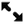. To return to the prior view, click the "Close" arrow in the upper left.
The plotting tool, by default, starts with RA and Dec plotted -- if it can find RA and Dec in the catalog. Note that it plots following astronomical convention -- RA increases to the left. If the catalog does not have RA and Dec, it plots the first two numerical columns it finds.
The difference between them is that, for larger catalogs (left), the plot is binned -- more points are encompassed in a black tile and fewer points are encompassed in a white tile. In the context of this tool, this is called a heatmap. For smaller catalogs (right), each individual point is shown as a blue dot. In the context of this tool, this is called a scatter plot.
In either case, letting your mouse hover over a point tells you the
values of the point under your cursor, and (if binned) how many points
are represented:
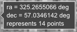 for binned
plots, and
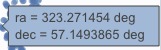 for just one point.
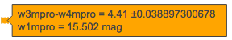 Clicking (in an unbinned
plot) highlights that point, and it stays highlighted, though you
must keep your mouse on the point in order to see the information
about how many points it represents.
You can change the bin size and shading. If you have a binned plot, you have a "binning options" arrow near the bottom of the plot options pop-up. You can choose whether the binning is set automatically (leave boxes blank), or by you (populate the boxes). You can also choose if the grey shading is set linearly or logarithmically. NOTE THAT you can't change the bin size in just one direction; if you enter a number for the "Number of x-bins" box, you must also enter a number for the "Number of y-bins" box.
The reason the tool makes a heatmap for large catalogs this is to more fairly represent the point density -- and to make the plotting faster. In these cases, though, it will not give you the option to overplot errors (see below). If you have a heatmap and want a scatter plot, you need to filter or otherwise restrict the catalog to have fewer points (see below).
This section describes how to change what is plotted, e.g., the "Modify Trace" option at the top of both of these pop-ups. Both overplotting and addding plots are covered in more detail below.
Click on the black triangle to reveal additional options.
In both of the examples above, RA is plotted on the x-axis. It has pulled the column name for the label; in this table, the column is "ra" rather than "RA". It has copied over the units ("deg") from the catalog, and plotted the x-axis increasing to the left as per astronomical convention. You can change what column is plotted, and whether or not errors are shown. Under "Chart Options", you can specify:
By default, the boundaries of the plot are set to encompass the full data range. Here you can change the boundaries to specific numbers. (This can also be set via filtering from the plot; see below.)
You can enter simple mathematical relations in these boxes too, such as (for a WISE catalog) "w1mpro-w4mpro" to put [W1]-[W4] on one axis. Supported operators:
Click "Apply" to apply, and "Close" to return to the plot without making changes.
Right below where you specify the columns for the x and y axis, under "Trace Style," you can control whether the points are shown as individual points, connected points, or just lines connecting the points.
Under Trace Options, you have many choices.
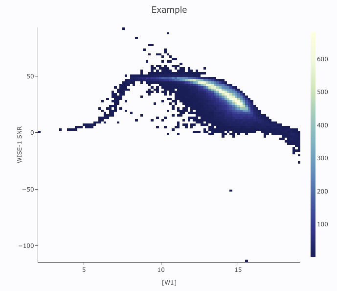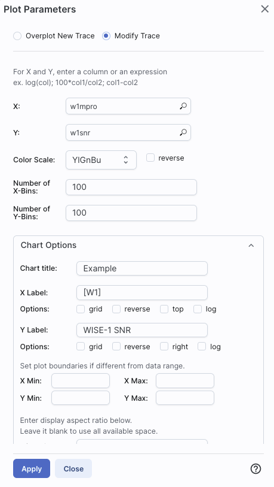
Example: Load either a smaller WISE catalog, or the same large WISE catalog, but filter it down such that w1snr, w2snr, and w3snr are all greater than 10, which limits the number of points to be <15,000. Plot w1snr vs. w1mpro. It shows the points individually Change the labels. Change the point color map to scale with w2mpro (WISE-2 profile fitted magnitude). Change the point size map to scale with w4snr (WISE-4 signal-to-noise). Obtain this plot:
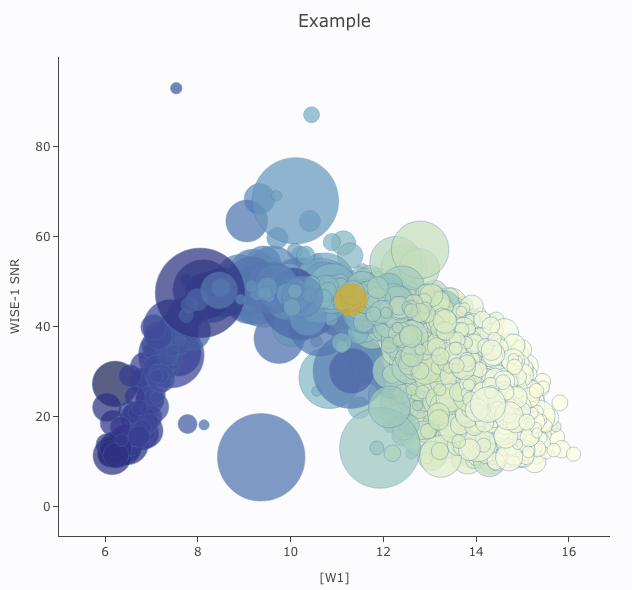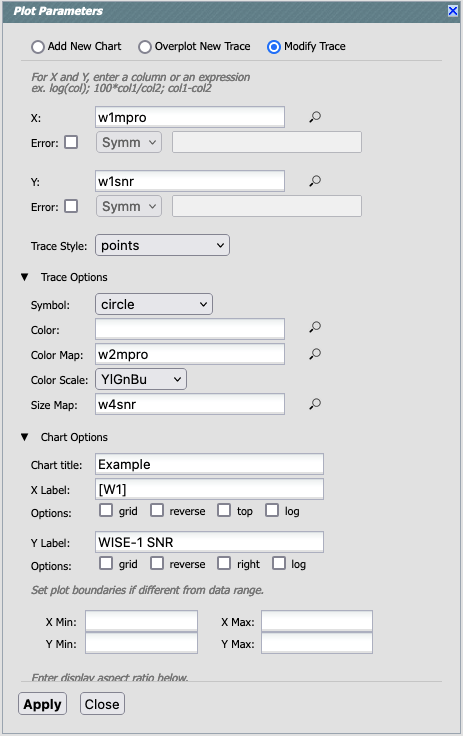
For example, if you have loaded a WISE catalog, you can plot [W1]-[W2]
vs. [W3]-[W4]. In terms of the names of the columns in the database,
this is w1mpro-w2mpro vs. w3mpro-w4mpro.
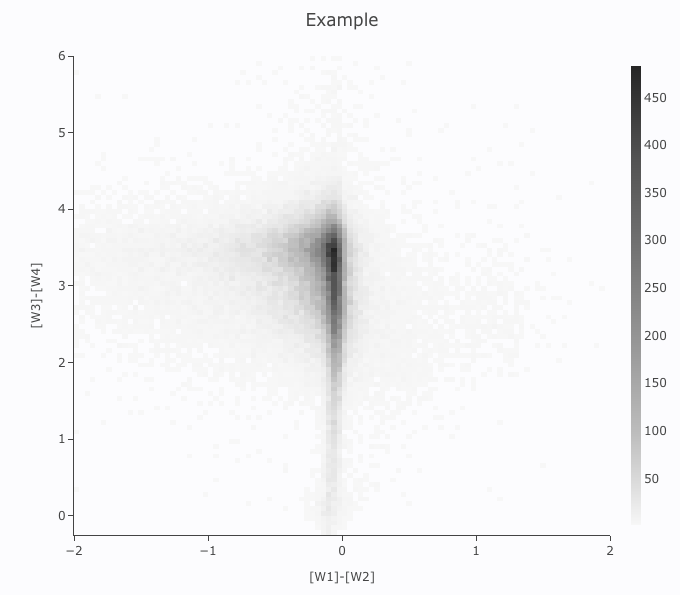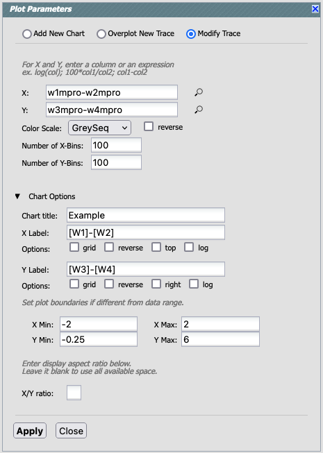
If you have few enough points that the plot is not binned, you can add
errors, and you can also manipulate those. Here, the expression for the
x-axis errors is sqrt(power(w1sigmpro,2)+power(w2sigmpro,2)) and for
the y-axis errors, it is sqrt(power(w3sigmpro,2)+power(w4sigmpro,2)).
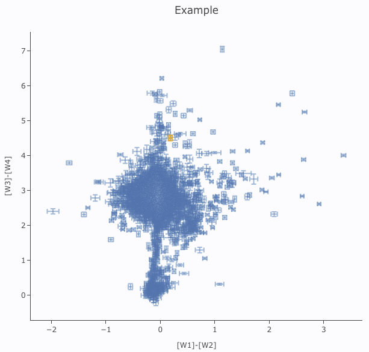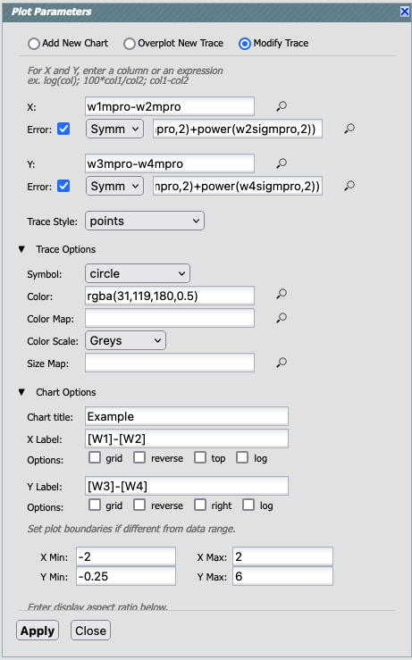
You can filter the catalog from the table itself (discussed in another section).
You can set axis limits on the plot itself from the plot options pop-up (discussed above).
However, and perhaps more powerfully, you can set limits from the plot itself using a rubber band zoom. Click on the select icon in the plot () Click and drag in a sub-region of the plot. New icons appear: If you click on the funnel icon, only those data points that pass the filter are shown in the plot, in the table, and/or overlaid on the image(s). (This is the behavior of 'filter', as opposed to 'select'; the former restricts what is shown, the latter just highlights the points.) For more on filters, see the filtering dicussion in the tables section.
Example: Obtain a WISE catalog of a star-forming region, say IC1396.
Filter down the catalog to only have WISE-1 and WISE-4 detections
(limits have undefined errors, so ask the catalog to filter down such
that w1sigmpro>0, w2sigmpro>0, w3sigmpro>0, and
w4sigmpro>0. Plot w1mpro-w4mpro on the x-axis, and w1mpro on the
y-axis. Reverse the y-axis to put bright objects at the top. Click and
drag in the plot to select the bright and red objects, and filter them
down to get a subset of bright and red sources. For clarity, the
screenshot here has the sources selected, not filtered.
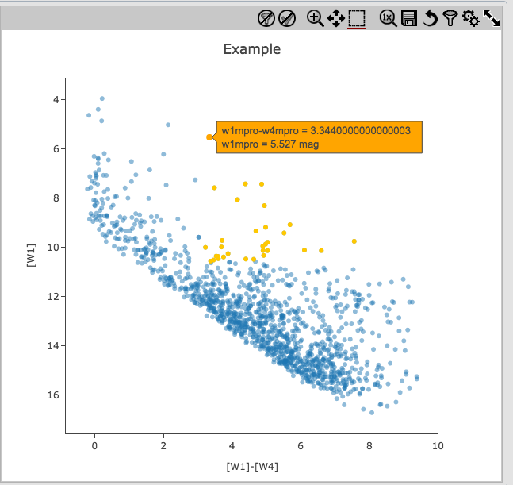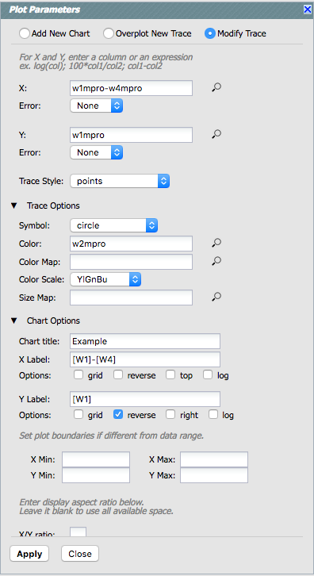
At the top of the pop-up that you get when you click on the gears, you have three radio buttons: 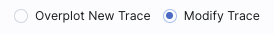 They are "Add New Chart" (see next section), "Overplot New Trace" (this section), and "Modify Trace" (see above sections). In this section, we will cover overplotting. This is sometimes called "multi-trace," meaning that more than one thing is plotted.
When you select "Overplot New Trace," you get a new interface that is
very similar to the original interface where you selected what to
plot:
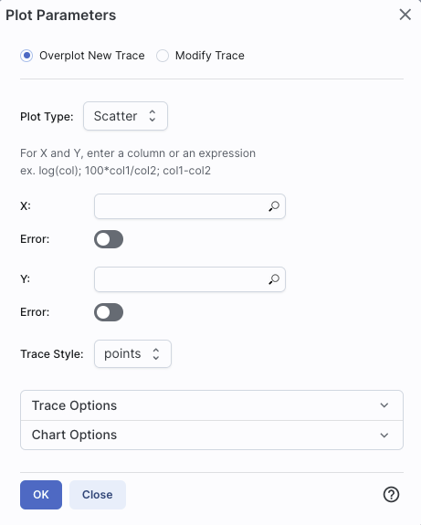
As before, you need to :
You can easily get yourself into a physically nonsensical situation, say, by overplotting a histogram onto a scatter plot. If you find yourself in a hopeless mess, click on the "undo" icon to reset everything and try again.
The best way to explain how to use this feature is probably via an
example. We have a plot of [W1] vs. [W1-W4] from above. Now add on
top of it a plot of [W2] vs. [W1-W4]. Click on the gears to bring up
the pop-up. Select "Overplot New Trace." Enter "w1mpro-w4mpro" for x
and "w2mpro" for y. Expand "Chart Options." Note that it has preserved
the overall chart title from before, but has erased the X and Y labels
(and lost the reversal of the y axis) because the overplot could
literally be anything, and need not be the same columns or even the
same units as what is already plotted. Type them in again. This is the
configuration window right before clicking "ok", and the resultant
plot.
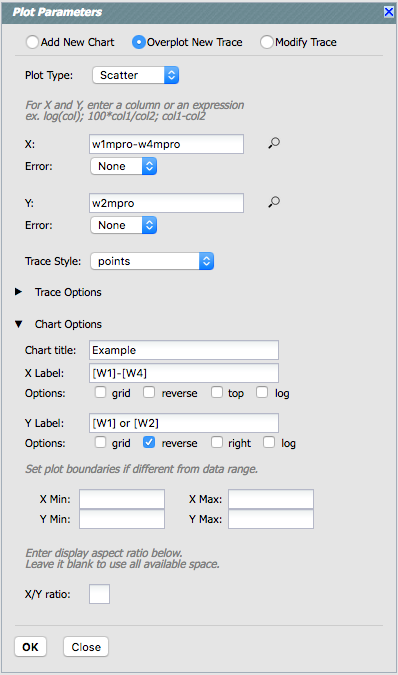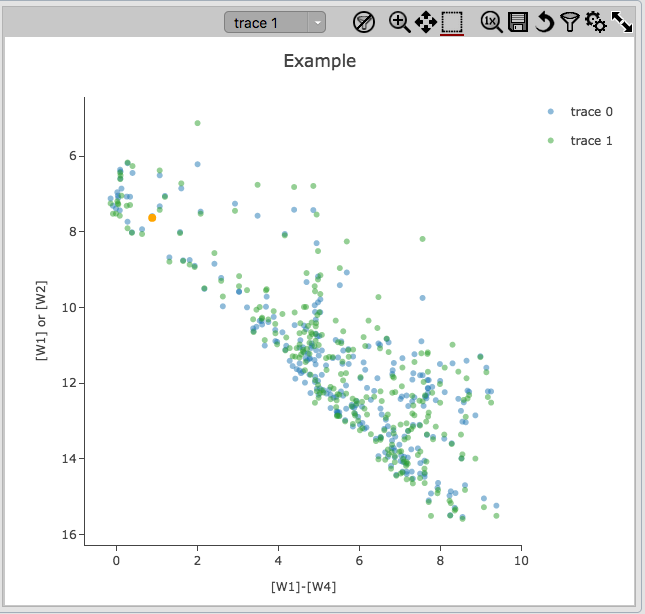
Note that there is now a
pulldown at the top of the plot -- from here, you select which is the
"active" trace, i.e., which one is in the top layer and therefore
affected by changes you make. There is a legend on the plot specifying
which color corresponds to which trace. In this example, the plot has
appeared using a blue and green color scheme, which may be too hard to
differentiate. To change the second plot points' color, click on the gears,
ensure "Modify Trace" is selected, select "trace 1" (as opposed to
"trace 0", the first one you loaded), go down and expand the "Trace
Options" and pick a different color. You can also change the legend
name from "Trace 1" to, in this case, "W2." Click "apply"
to apply the changes to the plot:
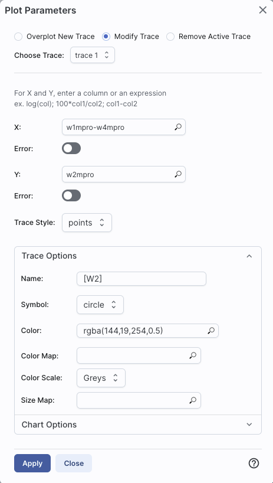
Note that once you change the trace name, the relevant pull-down menus
and legends update accordingly:
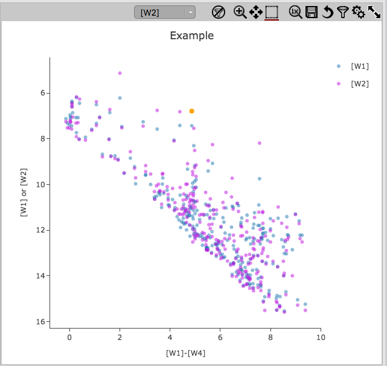
Note that the pop-up spawned by clicking the gears now has additional
options at the top: "Add New Chart", "Overplot New Trace", "Modify
Trace", and "Remove Active Trace." From here, you can modify a trace
you have already plotted (as described above), overplot another trace
(also as described above), or remove the selected trace:
First, from the blue "charts" tab on the top. This brings up a dialog
from which you can choose to make another scatter plot (left below), a
heatmap (center below), or a histogram (right below):
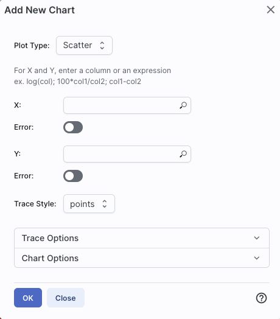 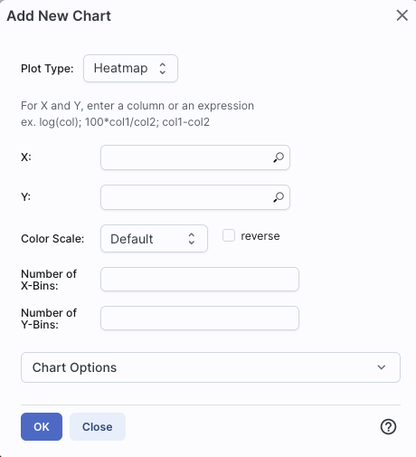 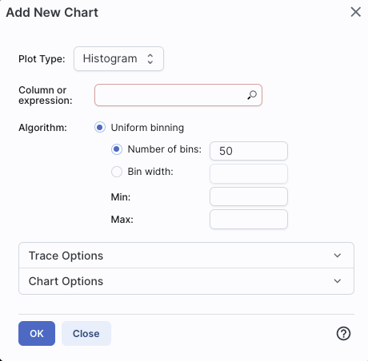
The options for these plots
here are very similar to what is described above. You can specify
which columns to plot or manipulate and plot, specify labels, etc.
Scatter plots allow you to choose points, connected points, or lines; you can add errors to each point. There is a maximum of 15,000 points for scatter plots.
Heatmap plots are binned scatter plots; you can choose what color scale and how many bins to use.
Histogram plots allow you to choose how many bins or the bin width. Note that, if you provide a minimum number, the binning starts at the minimum value you provide, and may exceed the maximum you entered in order to fit in a whole bin.
You can change what is plotted after plotting by clicking on the gears.
Using this "charts" tab, you can have as many plots up at the same time as you need. Note that many plots of a large catalog may make your browser run slowly; it will refuse to make a scatter plot for catalogs with >15,000 points.
You can view multiple plots all at once or one at a time by clicking on the corresponding icons above the plots (just as when you have multiple images loaded): 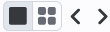. If you are viewing one at a time and have more than one plot loaded, you can scroll between them by clicking on the arrows (just as when you have multiple images loaded).
You can also create a new plot from the gears pop-up. Select "Add New
Chart", and set what should be plotted as above.
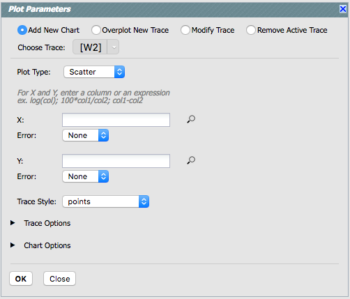 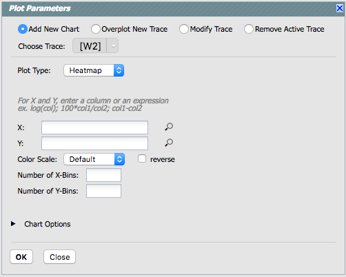 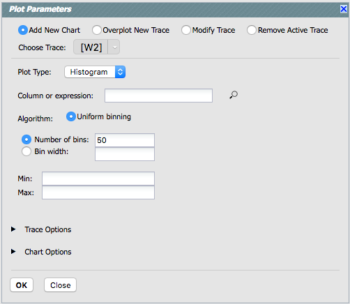
When you make a plot that you want to retain, click on "pin chart" 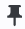 and it will make a copy of that chart on the far right of your plot area.
| 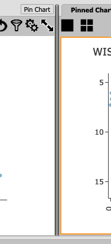 | By default, the pinned plot(s) takes up a relatively small fraction of your browser screeen area. To change the relative areas of the image (if present) and the plots, put your mouse over the boundary between plots (or plot and image) and click-and-drag the boundary when it changes to look like this. |
It shows your pinned plot in a different tab than your current plot.
To change between them, just click on the tab
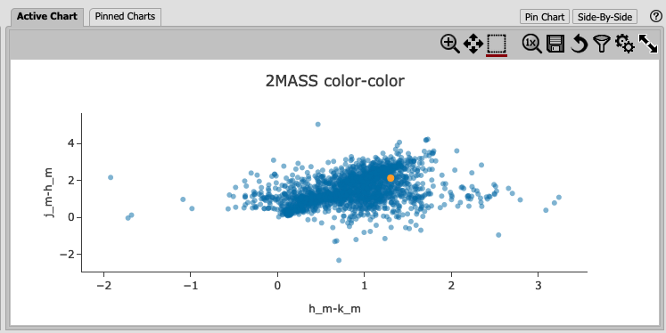
Tips and Troubleshooting
This option is not available unless you have extracted several spectra from the same file or have loaded in several spectra from a file.
To start this process, click to select the first chart you want to
combine, then click on "Combine Chart." You get this
pop-up:
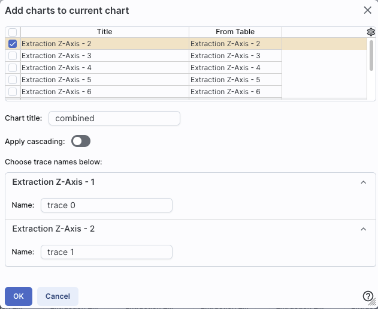
All of the remaining pinned charts that can be combined appear as a
list at the top, and once you select them via the tickboxes on the
left, they appear as options on the bottom. For this example, I
extracted the observed spectra from a SOFIA data cube at several sky
positions. The extractions are the default "Trace <n>". Clicking
OK from this pop-up yields a plot where all four contributing plots
are shown on the same chart. In this case, I had to change the y-axis
to a logarithmic scale to see all four traces properly.
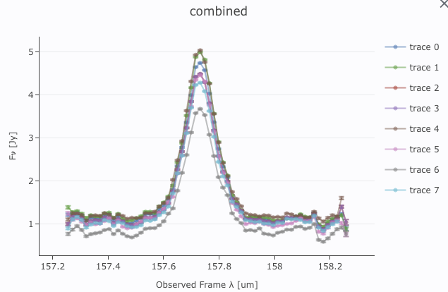
The pulldown at the
top of the plot controls which trace is in the 'foreground' for
changing plot parameters or selecting points, but you can also simply
click on points in the plot, much as with plots that aren't created
from combining plots.
Tips and Troubleshooting
Phase-folded light curve from K2 data:
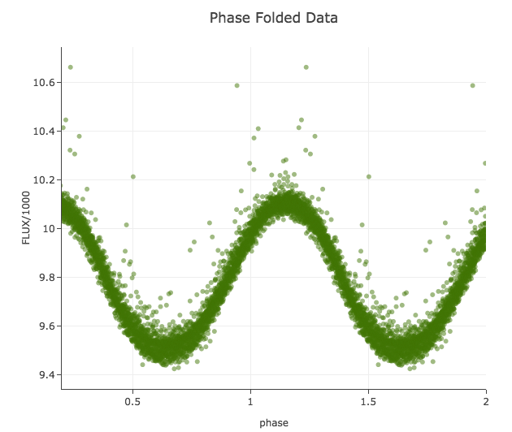
Plot on the sky of stars where the color of the point is scaled to
brightness in WISE-4:
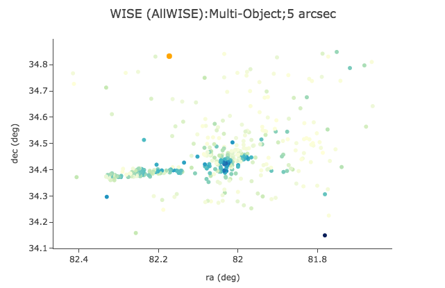
Gaia distance (in kpc, from Bailer-Jones et al. 2018), with asymmetric
errors, as a function of Gaia G magnitude, with colors of the point
scaled to brightness in WISE-4:
[W1] light curve of Neptune over
several years, with colors of the point scaled to heliocentric
distance:

Absolute Gaia color-magnitude diagram of candidate members of a
star-forming region (note some background giants still in the list),
where point size is scaled by WISE-4 brightness: